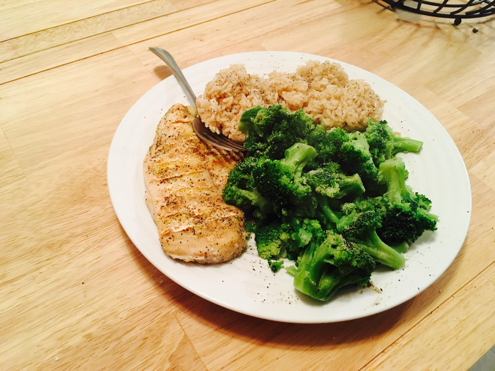

วิธีทำอาหารคลีนง่าย ๆ สำหรับมือใหม่
ปัญหาของการกินอาหารคลีน
- ความยากลำบากในการเตรียมอาหาร
- ความเบื่อหน่ายจากเมนูที่ซ้ำซาก
- ความยากลำบากในการเตรียมอาหาร
- ราคาวัตถุดิบที่สูงกว่าอาหารทั่วไป
อาหารคลีนในความเป็นจริงมีหลายเเบบมาก เช่น
-
ถ้าเลือกเมนู ข้าวกล้อง + อกไก่ย่าง + ผักลวก
- รูปเเบบที่คล้ายกัน
- ข้าวกล้อง + ปลาอบ + ผักนึ่ง
- ข้าวกล้อง + เต้าหู้ย่าง + ผักลวก
-
ถ้าเลือกเมนู สลัดผัก + ปลานึ่ง
- รูปแบบที่คล้ายกันคือ:
- สลัดผัก + ไก่ย่างไม่ติดหนัง
- สลัดผัก + ไข่ต้ม
-
ถ้าเลือกเมนู “ข้าวโอ๊ต + กล้วย + นมอัลมอนด์”
- รูปเเบบที่คล้ายกัน
- ข้าวโอ๊ต + แอปเปิ้ล + นมถั่วเหลือง
- ข้าวโอ๊ต + เบอร์รี่สด + น้ำเต้าหู้
รูปเเบบของการทำอาหารคลีนเกือบทุกเมนู
อาหารคลีน = วัตถุดิบดี + วิธีปรุงดี + ความตั้งใจดี
- วัตถุดิบดี = สดใหม่ / ไม่มีสารกันบูด / ไม่ผ่านกระบวนการมาก
- วิธีปรุงดี = ไม่ทอด / ไม่ใช้น้ำมันเยอะ / ใช้การนึ่ง-ต้ม
- ความตั้งใจดี = ใส่ใจสุขภาพ / ควบคุมรส / วางแผนเมนู
ขั้นตอนการทำอาหารคลีนง่าย ๆ สำหรับมือใหม่
- ขั้นตอนที่เเรก คือ เลือกเมนูทีอยากทำเเละมีประโยชน์ เช่น ข้าวกล้อง + อกไก่ย่าง + ผักลวก ข้าวโอ๊ตต้ม + กล้วย + นมอัลมอนด์
- ในที่นี้เราจะเลือกเมนูข้าวกล้อง + อกไก่ย่าง + บรอกโคลีลวก เป็นตัวอย่าง
-
เตรียมวัตถุดิบ:
- ข้าวกล้อง 1 ถ้วย
- อกไก่ 1 ชิ้น
- บรอกโคลี 1/2 หัว
- เกลือหรือซีอิ๊วขาวเล็กน้อย - ซาวข้าวให้สะอาด ใส่น้ำ 1:2 และหุงในหม้อหุงข้าว
- หมักอกไก่ด้วยเกลือ/ซีอิ๊วขาว 10 นาที (ถ้าต้องการ)
- ย่างหรือ ต้มอกไก่จนสุก (ประมาณ 10–15 นาที)
- ลวกบรอกโคลี 1–2 นาที แล้วแช่น้ำเย็นให้สีสด
- จัดจาน: ข้าว + ไก่ + ผัก เสิร์ฟพร้อมน้ำจิ้มคลีน
- พร้อมรับประทาน!
